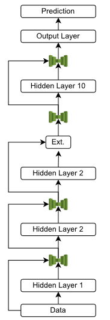

Introduction
This is a project for power consumption forecasting with deep neural networks. This project utilized several different neural network architectures to predict power consumption.
Data and Data Preprocessing
The data is from Kaggle. The data is from smart meters in homes in the London area dataset, spanning from 2011 to 2014, with measurements taken every 30 minutes. The dataset contains power data per half hour as well as several weather features.
To process the weather data, it was augmented to match the half-hour frequency of the power dataset through quadratic interpolation. For descriptive columns, the descriptors from the preceding rows were copied. Important columns and descriptors were processed into numerical values. After processing, the weather data contained information on visibility, temperature, dew point, pressure, wind speed, precipitation type, and humidity.
The power data was normalized by summing the power consumption across all households for each time interval and dividing by the total number of homes per time index. All values were then normalized using sklearn's MinMaxScaler.
Training Methodology
A standard 70% training, 10% validation, and 20% testing split was used.
Models
Baseline Model
To compare our neural networks, the XGBoost algorithm was utilized. The number of estimators used was 1000.
Deep Residual Network
The first neural network utilized was a Deep Residual Neural Network. This network, along with all subsequent networks, was implemented in PyTorch. Given the complexity of time series forecasting for a single output, the network required many layers to meaningfully process the input and predict an output window. To reduce the vanishing gradient problem that affects deep networks, residual connections were used between each layer.
The above figure shows the overall architecture of the Deep Residual Network, with residual connections in the form of concatenating the output of a layer with its input. This allowed the network to have 10 layers with roughly 1000 nodes at each hidden layer. However, the deepness of the network resulted in millions of learnable parameters.
Convolutional Preprocessing - Fully Connected (CONV)
A convolutional preprocessing (CONV) layer was added before the dense layers of the neural network to exploit the time dependence of the input window. This layer acted as a feature extraction layer for the power consumption data, enabling more meaningful input to the dense layers. There was locality between each half-hour measurement in the input window, and a convolution through time helped the network extract these features more effectively. A one-dimensional convolution was applied across the power consumption features, followed by concatenating the weather data onto the result before passing it to the dense layers.

CONV - LSTM
Building on the success of the CONV layer, an LSTM was used to capture the interdependence of each point in the output window on the others. Each prediction in the 24-hour output window (except the first) depended on all previous predictions, which was ideal for using an LSTM. The LSTM architecture involved first using a CONV layer to extract features from the power consumption data, followed by a linear layer to expand the features into an input sequence for the LSTM. Finally, an LSTM processed the input sequence, and linear layers were used to decode the outputs into power forecasts.
Results
Final Day Forecast Comparison
The figure below shows the final day in the test set for each model, along with the true results for comparison. The CONV-LSTM model was the most accurate, followed by XGBoost, then the CONV model, and finally the Deep Residual Network. The XGBoost model tended to overestimate, providing a conservative estimate for power consumption.

Loss Comparison

Training Time Comparison